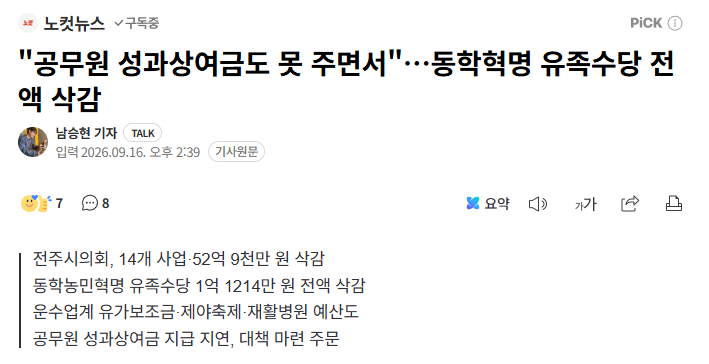

https://n.news.naver.com/mnews/article/079/0004190038?sid=102
공무원한테 줄 돈도 없다보니
자연스럽게 서비스 종료...

https://n.news.naver.com/mnews/article/079/0004190038?sid=102
공무원한테 줄 돈도 없다보니
자연스럽게 서비스 종료...
와 다행히도 시의원 가족중에 저거 해당되는 사람이 없었네ㅋㅋㅋ
애초에 줄 이유가 없음
저런 생각을 했다는게 개열받음
그래도 양심은 있는지 저거 반대한다고 친일파 딱지는 안붙이네 ㅋㅋ
취소되어서 다행이다라는 생각보다 애초에 이런 멍청한 행정이 안 나왔었어야하는데 라는 생각이 먼저 드네
ㅋㅋㅋㅋㅋㅋㅋㅋ 병신행정 컷